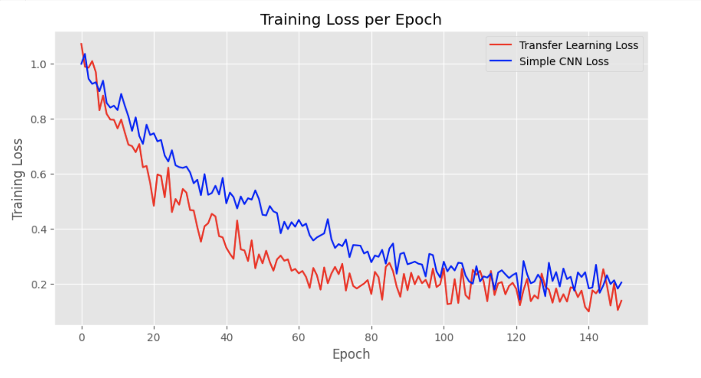

Transfer Learning
By leveraging the knowledge gained from pretrained models, we can significantly improve the
performance of our emotion recognition system. This section outlines our approach to transfer learning,
including the models and datasets we used.
Training on Embeddings
Our primary transfer learning approach focused on embeddings. Utilizing pretrained models to process
images, we extracted and saved the output of the last layer as an embedding, which distilled
hundreds of pretrained features into a format suitable for further classification tasks.
We explored two methods:

- Full Layer Training: Fine-tuning all layers of a pretrained model to harness
comprehensive embeddings for subsequent classifiers.
- Partial Layer Training: Selectively freezing the initial layers of a
pretrained model. These earlier layers typically capture universal features like textures and
contours, while the latter layers, which are left unfrozen, are refined to discern more complex and
task-specific patterns. This method allows us to concentrate on deep features that are more directly
relevant to recognizing the nuances of facial expressions for emotion detection.
This tailored approach allowed us to leverage pretrained model strengths, concentrating the learning on
the most relevant features for detecting children's facial expressions and thereby boosting performance
and efficiency.

Visual representation of the transfer learning process from data preprocessing to
classifier training.